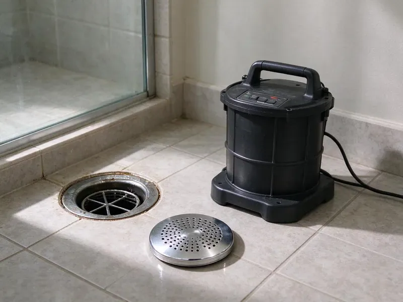

Drain Jetting in Bismarck, ND
For thorough drain cleaning in Bismarck, ND, look no further. HPN Plumbing provides professional drain jetting to blast away grease, scale, and debris from your pipes.
- Prevents Future Blockages
- Clear Pricing
- Skilled Technicians
- Camera Checks Included
Get Your Drains Fully Clean With Professional Jetting in Bismarck, ND.
Call and we will fit the jetter and nozzle to your drain size and pipe material.
Your Go-To for Drain Jetting in Bismarck, ND
When you're facing slow drains or recurrent blockages, HPN Plumbing offers expert drain jetting in Bismarck, ND. Our professional equipment delivers a thorough cleaning, restoring your drain lines to full flow and preventing the future issues that often trouble older homes in the area.
Our expertise includes:
- Clean indoor setup with drop cloths and containment
- Nozzles chosen for grease, scale or soft sludge buildup
- Prevents recurring clogs and costly repairs

Additional Drain Services Services in Bismarck, ND
From stubborn kitchen clogs to main sewer backups, our drain services in Bismarck, ND clear the line and keep it clear with camera-verified results.


Customers
Why Choose HPN Plumbing for Drain Jetting in Bismarck, ND?
Many homes in Bismarck, ND have older plumbing that collects years of debris, leading to frequent clogs. Drain jetting offers a deeper clean than snaking, extending the life of your pipes and preventing future problems.
- Prevents Recurrence, By clearing all buildup, drain jetting greatly reduces the chance of future clogs forming.
- Preventative Care, Regular jetting prevents major blockages and extends the lifespan of your drainage system.
- Effective Root Removal, High-pressure water can cut through stubborn tree roots, a common issue in established North Dakota neighborhoods.
Citywide Coverage
Throughout Bismarck, we help homeowners and restaurant owners keep kitchen and laundry drains clear. Our techs can reach most neighborhoods fast.
Experienced Team
Our plumbing technicians are thoroughly trained in operating high-pressure drain jetting equipment. They have years of experience dealing with the diverse and often stubborn clogs found in North Dakota homes.
Safety-First Approach
Safety comes first on every drain jetting service we perform. We follow local Bismarck plumbing codes and industry best practices to protect your property and our technicians.
Trusted Certified Bismarck Plumbing Services Professionals
At HPN Plumbing, we take pride in providing certified plumbing services throughout Bismarck, ND. Backed by recognized industry credentials, our experienced plumbers combine technical skill with genuine customer care. Whether it is repair, installation, or maintenance, we follow strict safety and quality standards to deliver lasting results you can trust.
Call Us Now PHCC Plumbing Contractor Recognition
PHCC Plumbing Contractor Recognition Better Business Bureau (BBB) Accreditation
Better Business Bureau (BBB) Accreditation Angi Certified Pro
Angi Certified Pro ISO 9001 Quality Management Certification
ISO 9001 Quality Management CertificationTrusted Drain Jetting Services in Bismarck, ND
Residential Drain Jetting in Bismarck
For homeowners in Bismarck, slow drains and recurring clogs are common because of grease, hair, and hard water buildup. Our residential drain jetting service uses specialized nozzles to work through your home's plumbing, clearing blockages in kitchen sinks, bathroom drains, and main sewer lines. This method is particularly effective for older homes where years of buildup can lead to significant flow issues. We deliver a thorough clean without damaging your pipes.

Grease Trap Line Jetting in Bismarck, ND
Restaurants and commercial kitchens in Bismarck, ND frequently deal with grease accumulation in their drain lines. This congealed grease can harden and cause severe blockages, leading to overflows and health code violations. Our grease trap line jetting service uses hot water and high pressure to loosen and remove even the toughest grease buildup, keeping your kitchen drains clear and compliant. Regular jetting can prevent emergency blockages and keep operations running smoothly.
Storm Drain Jetting in Bismarck
Storm drains are crucial for managing rainwater runoff. Heavy summer thunderstorms can also overload storm sewers, so backwater valves help protect finished basements. Over time, these drains can clog with leaves, silt, debris, and trash, leading to localized flooding. Our storm drain jetting service in Bismarck clears these blockages, keeping water moving and preventing water damage to your property. We use powerful jetting equipment that moves large amounts of debris to restore your storm drainage system.
Laundry Drain Jetting in Bismarck, ND
Washing machines discharge lint, fabric softener residue and fine sand or grit. These build into a gray sludge that slows the standpipe and spills over during the spin cycle. Jetting clears the standpipe and branch line completely. We also check the trap, vent and drain size to make sure they can handle the washer flow. A lint filter on the discharge hose helps keep the line clear.
Post-Jetting Camera Inspection in Bismarck, ND
After drain jetting in Bismarck, ND, HPN Plumbing often recommends a camera inspection to verify the cleaning and check for any underlying pipe damage. This lets us make sure all blockages are completely removed and spot any cracks, breaks, or misalignments that could lead to future problems. This step provides peace of mind and allows for proactive repairs if necessary.
Hydro Jetting for Main Sewer Lines in Bismarck
Main sewer line clogs can be devastating, leading to backups throughout your property. Our hydro jetting service targets these critical lines in Bismarck, blasting away stubborn tree roots, sludge, and other obstructions. Tree roots are a common problem, invading sewer lines as they seek moisture. We use root-cutting nozzles with our hydro jetters to break up roots and flush them out, restoring full capacity to your main sewer.
Emergency Drain Jetting in Bismarck
When a severe drain clog strikes, you need quick, effective help. HPN Plumbing offers emergency drain jetting in Bismarck for urgent blockages that are causing backups and potential water damage. Our rapid response team is equipped to diagnose and clear even the most stubborn clogs, often on the same day. We understand the stress of a plumbing emergency and work quickly to restore your drains, minimizing disruption to your home or business.

Drain Jetting Maintenance Plans in Bismarck
If you have a busy kitchen or a line that keeps clogging, scheduled jetting can keep it clear. Homes may need service once a year, while restaurants may need it every few months. Regular service prevents surprise backups and costly emergency calls. Maintenance plan customers get priority scheduling and set pricing. We keep records of every visit.
Drain Jetting Near Me in Bismarck, ND
Our drain jetting team is local and brings compact equipment to homes and businesses across Bismarck. We can often schedule the same day for urgent clogs. Every visit includes a test run to confirm full flow.
Local knowledge helps us predict what we will find, from hard water scale to grease-coated kitchen lines. We stock the right nozzles and hose sizes for the pipes typical here. That means faster, cleaner work on your job.
HPN Plumbing at a Glance
- Fully licensed plumbing team covering Bismarck, ND
- 24/7 emergency service with same-day scheduling
- Clear written estimates, no hidden fees
- 4.9-star rated by 408+ North Dakota customers
Bismarck Map
Bismarck Information
- Population
- 75,092
- Area codes
- 701/406/320
- Service area
- Bismarck and communities within 40 miles
- Nearby
- Mandan, Dickinson, Jamestown, Minot
For homes in Bismarck, ND, drain jetting clears root growth, mineral deposits and organic buildup before they turn into a backup. Big swings between summer heat and winter cold make pipes expand and contract, which slowly loosens fittings over the years.
Expert Services
Trust our professionals for reliable HPN Plumbing solutions in Bismarck, ND.
Our Specialized Plumbing Services in Bismarck, ND
At HPN Plumbing, we provide a complete range of plumbing services across Bismarck, ND. From leak detection to full system installations, our team ensures fast, precise, and affordable service for both residential and commercial properties. Explore our core services below:


How Our Drain Jetting Process Works in Bismarck, ND
We follow a systematic approach so your drains are thoroughly cleaned and working properly in Bismarck, ND.
Request a Quote
Call (701) 403-1348 to schedule your drain jetting service. Our friendly team will gather information about your drain issues and set up an appointment that works for you.
On-Site Assessment
Our licensed plumber arrives and performs a thorough inspection, often using a camera, to locate the clog and assess pipe condition. This helps us determine the best approach for jetting.
High-Pressure Jetting
We use specialized jetting equipment, sending high-pressure water through your pipes to clear blockages and thoroughly clean the pipe walls. This method is very effective for grease, roots, and scale.
Frequently Asked Questions About Drain Jetting in Bismarck
The cost of drain jetting in Bismarck, ND can vary a good deal, typically ranging from $250 to $800, depending on the severity and location of the clog, the pipe size, and the length of the line. Complex jobs, like extensive root removal or main sewer line blockages, may be on the higher end. We provide a written estimate after an on-site assessment.
Consumer jetter attachments for pressure washers exist, but they can cause leaks or injuries if misused. A pro has the right equipment and training.
No. We use drop cloths, containment and careful setup to keep water where it belongs.
We use professional compact jetters from well-known drain equipment makers, paired with nozzles designed for grease, scale and debris.
HPN Plumbing uses professional drain jetting equipment from reputable manufacturers such as Spartan Tool and MyTana. These professional-grade machines give us the power and precision to clear even the toughest clogs efficiently.
A drain jetting service in Bismarck, ND typically takes 1 to 3 hours, depending on the severity and accessibility of the blockage and the length of the pipe being cleaned. More complex situations, like main sewer line issues, might take longer.
We do not recommend using a home pressure washer for drain jetting. These machines lack the power, specialized nozzles, and safety features of professional equipment. Improper use can damage your pipes, cause serious injury, or push clogs deeper. Always rely on trained professionals for drain jetting.
Signs you might need drain jetting include often recurring clogs, very slow drains in multiple fixtures, foul odors coming from drains, gurgling sounds, or sewage backups. If snaking hasn't solved your issues, jetting is probably the next step.
What People Are Saying About Our Plumbing Experts?

Laura S.
I scheduled a water heater replacement, and the team made the process smooth and affordable. The new unit works perfectly, and they cleaned up after completing the job.
Water Heater Replacement · Minot, ND
Mark T.
When our office needed drain cleaning, HPN Plumbing provided quick, reliable service. The plumber arrived on time and made sure every drain flowed perfectly before leaving. Very satisfied.
Drain Cleaning · Dickinson, ND
Daniel K.
A pipe burst at 11 pm and they actually answered. The plumber showed up within the hour, shut everything down, and had us back to normal the next morning. Could not ask for more.
Emergency Plumbing · Minot, ND
James P.
Our commercial plumbing system had a leak under the sink, and HPN Plumbing handled it professionally. The plumbers arrived quickly and restored everything without disruption to our customers.
Commercial Plumbing · Minot AFB, ND
Emily R.
I called HPN Plumbing for plumbing repair, and the technician was fast, polite, and thorough. They explained the problem clearly and fixed it the same day. I will definitely hire them again. Highly recommended!
Plumbing Repair · Devils Lake, NDRobert G.
The trenchless sewer replacement saved our front yard. They walked us through the camera inspection footage first so we knew exactly what we were paying for.
Sewer Line Replacement · Devils Lake, ND